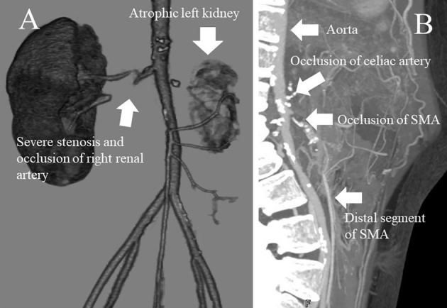
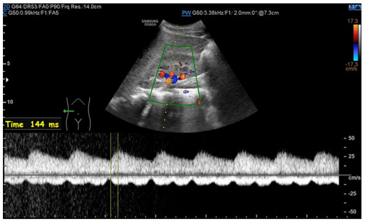
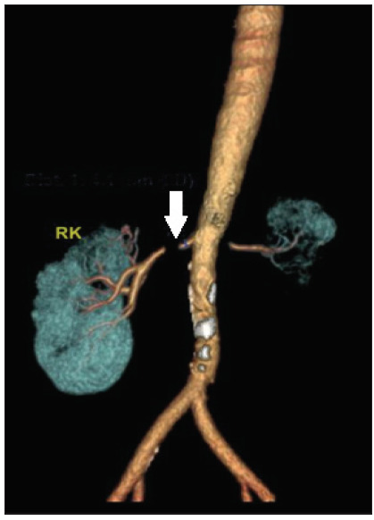

6708 — Hẹp động mạch thận do xạ ở trẻ: vì sao huyết áp tăng SAU nhiều năm, phổ parvus–tardus, và khi nào nong bóng, đặt stent, cắt thận
Tags: pattern:hep-dong-mach-than pattern:tac-dong-mach pattern:than-nho pattern:tang-huyet-ap pattern:hep-lo-dong-mach pattern:teo-than vung:than vung:dong-mach-chu protocol:sieu-am-Doppler protocol:CTA protocol:MRA protocol:DSA
Mức chắc chắn (certainty): tổng hợp y văn (literature synthesis) — ghép ca nữ 19 tuổi, xạ trị u nguyên bào thần kinh lúc 2 tuổi (12 Gy trong mổ + 9,9 Gy), tăng huyết áp do mạch máu thận phát hiện lúc 12 tuổi, suy tim sung huyết lúc 19 tuổi, ghép thận tự thân (Intern Med 2019, PMCID PMC6663535, CC BY-NC-ND), ca nam 33 tuổi hẹp động mạch thận hai bên 14 năm sau xạ 45 Gy vùng bụng–chậu, nong bóng + 2 stent, huyết áp về bình thường sau 2 tháng (Indian J Nephrol 2025, PMCID PMC11883334, CC BY-NC-SA), bài tổng quan hẹp động mạch thận và hội chứng ĐMC giữa ở trẻ (J Clin Med 2024, PMCID PMC11594493, CC BY) cùng hai bài tổng quan về di chứng thận và tăng huyết áp ở người sống sót ung thư nhi (Pediatr Nephrol 2026, PMCID PMC13197264; Curr Hypertens Rep 2025, PMCID PMC11909068). Không có ca do nhóm tự chụp.
Kịch bản thực hành (ghép từ các ca trên, không phải ca nguyên văn): bé gái 2 tuổi được mổ u nguyên bào thần kinh ổ bụng, có xạ trị trong mổ 12 Gy vào vùng cuống thận trái và hóa–xạ toàn thân 9,9 Gy, sau đó ghép tế bào gốc tự thân. Mười năm sau (12 tuổi) khám vì đau đầu, nhìn mờ, huyết áp 150/95 mmHg (bách phân vị > 99 + 12 mmHg theo tuổi/chiều cao). Bé không phù, không tiểu máu, nhưng creatinin 1,4 mg/dL và renin hoạt tính 19,0 ng/mL/h (bình thường 0,3–2,9), aldosteron 997 pg/mL (bình thường 29,9–159). Siêu âm: thận phải 9,8 cm, thận trái 5,2 cm. Câu hỏi: huyết áp tăng là do di chứng xạ nhu mô, do hẹp động mạch thận, hay "tăng huyết áp vô căn" của tuổi dậy thì — và đọc Doppler/CTA thế nào để trả lời? Bài chốt bốn quyết định: (1) mọi trẻ sống sót ung thư có xạ bụng/thắt lưng hoặc cắt thận phải đo huyết áp HẰNG NĂM trọn đời — hẹp động mạch thận do xạ xuất hiện sau trung vị 1–9 năm và có thể tới 14 năm; (2) hẹp do xạ điển hình ở LỖ–ĐOẠN GẦN, dài, nhẵn, kèm thận nhỏ cùng bên, và có thể HAI BÊN; (3) siêu âm Doppler chỉ là cửa sàng lọc — phổ parvus–tardus với thời gian tăng tốc (acceleration time, AT) > 70 ms và chênh chỉ số sức cản (resistive index, RI) > 0,05 mới đủ gợi ý, còn chụp mạch (DSA) là chuẩn vàng vì 19/74 trẻ có chụp mạch bất thường dù CTA/MRA/siêu âm bình thường; (4) nong bóng là lựa chọn đầu tay (khỏi hoàn toàn 39,3% sau lần 1, 57,1% sau các lần), stent chỉ khi hồi phục > 50% sau nong hoặc tái hẹp sớm (hẹp lại trong stent 35,5–37%), còn phẫu thuật (ghép thận tự thân/bắc cầu) dành cho tổn thương dài–lỗ không nong được, và cắt thận chỉ khi thận teo mất chức năng mà huyết áp không kiểm soát. Nối 6707 – Bệnh động mạch ngoại biên do xạ, 6706 – Bệnh động mạch vành do xạ, 6700 – Di chứng muộn sau Wilms, 6117 – Tăng huyết áp do mạch máu thận sau huyết khối sơ sinh, 850 – Loạn sản cơ xơ (FMD) toàn thân ở trẻ.
1. Tổng quan bệnh học – cơ chế hình ảnh: vì sao một liều xạ ở tuổi lên 2 lại làm huyết áp tăng ở tuổi 12
- Hai tổn thương chồng lên nhau trong cùng trường chiếu. Thận là cơ quan song song (parallel organ): mất một phần nhu mô vẫn bù được, nhưng nhu mô bị xạ gây bệnh thận do xạ (radiation nephropathy) — xơ hóa cầu thận và kẽ thận, tăng huyết áp, protein niệu, suy thận mạn; trong khi động mạch thận bị xạ gây hẹp lỗ–đoạn gần → tăng huyết áp do mạch máu thận (renovascular hypertension, RVH). Hai cơ chế cho cùng một con số huyết áp nhưng điều trị khác hẳn: RVH chữa được bằng nong mạch, bệnh thận do xạ chỉ kiểm soát nội khoa.
- Ngưỡng liều (quantitative). Nguy cơ bệnh thận do xạ tăng rõ khi tổng liều > 15 Gy, nên khuyến cáo giữ liều xạ thận < 10–15 Gy; thể mạn thường xuất hiện 12–18 tháng sau xạ với tăng huyết áp, protein niệu, giảm mức lọc cầu thận (PMC13197264). Với mạch máu, thời gian tiềm tàng tới hẹp động mạch thận trung vị 1–9 năm, tần suất 0,5–10 ca/1.000 ca tăng huyết áp do nguyên nhân này, và xạ đẩy nhanh xơ vữa tới 40% (PMC11883334 dẫn y văn). Ca u nguyên bào thần kinh nhận 12 Gy trong mổ + 9,9 Gy hóa–xạ, đủ nằm trong vùng nguy cơ, và RVH được chẩn đoán 10 năm sau (PMC6663535).
- Vì sao trẻ sống sót vẫn "lọt" chẩn đoán: huyết áp ở trẻ không được đo đúng quy cách (băng quấn sai cỡ, đo một lần, không so bách phân vị theo tuổi–chiều cao–giới). Hướng dẫn Children's Oncology Group (COG) yêu cầu đo huyết áp hằng năm cho người sống sót từng xạ bụng/thắt lưng, xạ đầu–cổ–ngực, ghép tế bào gốc hoặc cắt thận; DCOG (Hà Lan) yêu cầu ít nhất mỗi 2 năm (PMC11909068). Thiếu mốc này, trẻ chỉ được phát hiện khi đã suy tim, nhìn mờ hoặc suy thận — đúng như ca 19 tuổi nhập viện với phù phổi, EF 24%, creatinin 1,98 mg/dL (PMC6663535).
- TẠI SAO hẹp lại nằm ở LỖ và ĐOẠN GẦN: tia xạ gây đứt gãy DNA và stress oxy hóa ở tế bào nội mô, rồi IL-1, IL-6, TNF-α, TGF-β biến nguyên bào sợi thành nguyên bào sợi sản xuất chất nền → dày nội mạc dạng xơ (fibrointimal thickening), xơ hóa lớp áo giữa và áo ngoài (periarterial fibrosis), kèm tổn thương vasa vasorum; lỗ động mạch thận là nơi ứng suất cắt (shear stress) cao nhất và sát hạch rốn thận được xạ nên tổn thương tập trung ở đó (PMC11883334, PMC11594493). Vì thành phần chính là collagen/fibrin chứ không phải lõi lipid, mảng xơ do xạ dài, nhẵn, đồng tâm, ít vôi — nhưng vôi hóa không loại trừ vì xạ cũng đẩy nhanh xơ vữa sẵn có (như ca 33 tuổi có vôi hóa nặng ĐMC dưới thận).
- TẠI SAO thận teo và vì sao huyết áp tăng: hẹp làm giảm áp lực tưới máu thận → tăng tiết renin → angiotensin II co mạch + aldosteron giữ muối–nước. Đây là mô hình Goldblatt: thận một bên thiếu máu gây tăng huyết áp phụ thuộc renin, còn thận bị xạ lâu ngày teo ống thận + xơ hóa kẽ nên ngắn hơn ≥ 1 cm so với bên đối diện. Ca u nguyên bào thần kinh có thận trái teo hoàn toàn, không chức năng trên xạ hình, thận phải hẹp/tắc ĐM — tức cả hai thận đều bệnh, chỉ khác mức.
- TẠI SAO Doppler cho phổ parvus–tardus: theo Bernoulli rút gọn (ΔP = 4V²), hẹp làm vận tốc tăng tại chỗ hẹp nhưng áp lực và vận tốc giảm ở đoạn xa → sóng giảm biên độ (parvus) và lên đỉnh chậm (tardus). Ngưỡng thực hành ở trẻ: AT > 70 ms gợi ý rối loạn dòng trước thận (một bên: hẹp động mạch thận; hai bên: hẹp hai bên/hội chứng ĐMC giữa), chênh RI > 0,05 gợi ý hẹp một bên (PMC11594493). Ảnh Doppler trong bài có AT = 144 ms — gấp đôi ngưỡng.
- TẠI SAO vẫn cần chụp mạch: CTA có độ phân giải không gian cao nhất nhưng nhiễm xạ và dễ bỏ sót tổn thương < 1 mm hoặc nhánh phụ; MRA không nhiễm xạ nhưng phân giải thấp hơn, đánh giá quá mức hẹp và kém với nhánh phân đoạn (PMC11594493). Trong 74 trẻ chụp mạch, 19 trẻ có chụp mạch bất thường nhưng CTA/MRA/siêu âm bình thường, và 14 trẻ chụp mạch bình thường nhưng CTA/MRA/siêu âm bất thường (PMC12187876) — nghĩa là không modality nào thay thế được DSA khi nghi cao.
2. Mẫu hình + chẩn đoán phân biệt theo vị trí (gamut)
- Mẫu hình chính: hẹp hoặc tắc lỗ–đoạn gần động mạch thận, một bên hoặc hai bên, đoạn hẹp dài, nhẵn, đồng tâm, thận cùng bên nhỏ ≥ 1 cm, kèm xơ quanh ĐMC và có thể hẹp/tắc các nhánh tạng khác trong trường chiếu (thân tạng, mạc treo tràng trên) — dấu hiệu "cả bản đồ liều cùng bệnh" (PMC6663535, PMC11883334).
- Gamut theo nguyên nhân ở trẻ:
- Xạ trị bụng/thắt lưng (u nguyên bào thần kinh, Wilms, Ewing, lymphoma) — tiền sử xạ đúng trường chiếu, hẹp lỗ–đoạn gần, có thể kèm bệnh thận do xạ.
- Loạn sản cơ xơ (fibromuscular dysplasia, FMD) — trẻ lớn/nữ, hẹp giữa–xa, hình "chuỗi hạt" (string of beads), không có tiền sử xạ (PMC11594493).
- Hội chứng động mạch chủ giữa (mid-aortic syndrome, MAS) — hẹp ĐMC bụng ± động mạch thận/thân tạng; 20–48% trẻ RVH có hẹp ĐMC giữa, chỉ 35% hẹp giới hạn đúng lỗ (PMC11594493).
- Takayasu — viêm, CRP/VS tăng, thành mạch dày đồng tâm, ngấm thuốc trên MRI, hẹp nhiều tầng.
- Di chứng huyết khối sơ sinh (catheter động mạch rốn) — tiền sử sơ sinh, thận teo, tổn thương một bên (bài 6117).
- Chèn ép từ ngoài — u Wilms/neuroblastoma tái phát, hạch, lymphocele; khối nhìn thấy được trên CT/MRI, khác hẹp trong lòng.
- Tăng huyết áp vô căn/do béo phì — không có tổn thương mạch, thận đối xứng, renin bình thường.
- Gamut theo số bên: một bên → renin cao, thận đối diện bù; hai bên hoặc thận độc nhất → nguy cơ suy thận cấp khi dùng ACEi/ARB, và tăng huyết áp thể tích nhiều hơn.
3. Bảng so sánh phân biệt (ma trận đối chiếu)
| Thực thể (entity) | Hình ảnh điển hình | Chốt vào (rule-in) | Chốt loại (rule-out) | Gợi ý xác nhận |
|---|---|---|---|---|
| Hẹp động mạch thận do xạ | Hẹp/tắc lỗ–đoạn gần, dài, nhẵn, ít vôi; thận cùng bên nhỏ ≥ 1 cm; có thể hẹp cả thân tạng/mạc treo trong trường chiếu | Tiền sử xạ bụng/thắt lưng + tổn thương đúng trường chiếu + thận nhỏ cùng bên | Thận đối xứng, tổn thương giữa–xa hoặc chuỗi hạt → FMD; không tiền sử xạ | CTA lát mỏng; DSA + đo gradient; đối chiếu bản đồ liều xạ |
| FMD | Hẹp giữa–xa, "chuỗi hạt", có thể hai bên; ĐMC bình thường | Nữ trẻ, không xạ, hẹp giữa–xa | Hẹp lỗ đơn thuần + xơ quanh ĐMC → do xạ/xơ vữa | CTA/MRA; DSA |
| Hội chứng ĐMC giữa (MAS) | ĐMC bụng hẹp ± lỗ động mạch thận/thân tạng; tuần hoàn bàng hệ | Chênh huyết áp tay–chân, hẹp ĐMC trên hình | ĐMC bình thường, chỉ hẹp một động mạch thận | CTA toàn ĐMC; MRA; siêu âm ĐMC |
| Takayasu | Thành mạch dày đồng tâm, ngấm thuốc, hẹp nhiều tầng, phình; CRP/VS tăng | Viêm hệ thống + thành mạch dày/ngấm thuốc | Thành mạch mỏng, không ngấm thuốc, không viêm → không Takayasu | MRI mạch + CRP/VS; PET-CT khi còn viêm |
| Di chứng huyết khối sơ sinh (UAC) | Thận teo một bên, mất phổ/tắc ĐM thận; tiền sử catheter rốn | Tiền sử sơ sinh + thận teo một bên | Có tiền sử xạ đúng vùng → nghĩ do xạ | Siêu âm Doppler; CTA; DSA |
| Chèn ép từ ngoài (u/hạch/lymphocele) | Khối mềm quanh mạch, đẩy lệch, bờ không đều; thận ứ nước có thể kèm | Thấy khối trên CT/MRI, tái phát u | Không có khối, hẹp trong lòng đúng trường xạ | MRI bụng; mô bệnh nếu còn nghi |
| Tăng huyết áp vô căn | Động mạch thận bình thường, hai thận đối xứng | Không tổn thương mạch, renin/aldosteron bình thường | Có hẹp + thận nhỏ + renin cao → RVH | Theo dõi; đo huyết áp 24 giờ |

Bệnh nhân nữ 19 tuổi, xạ trị u nguyên bào thần kinh lúc 2 tuổi: (A) thận trái teo, hẹp nặng và tắc động mạch thận phải (mũi tên); (B) tắc thân tạng và mạc treo tràng trên — cả "bản đồ liều" cùng bệnh. Nguồn: Intern Med 2019 (PMC6663535), CC BY-NC-ND 4.0 — ảnh nguyên bản, không cắt/ghép.4. Protocol chụp + phân độ + quyết định can thiệp
- Đo huyết áp (bước 0, hay bị bỏ): đo 3 lần, 2–3 lần khám, băng quấn đúng chuẩn (băng quấn phủ 40% chu vi cánh tay, 80–100% chiều dài), so bách phân vị theo tuổi–chiều cao–giới (AAP 2017): bình thường < 90th, tăng nhẹ 90–95th, tăng huyết áp độ 1 ≥ 95th đến < 95th + 12 mmHg, độ 2 ≥ 95th + 12 mmHg. Đo cả 4 chi để không bỏ hẹp eo ĐMC (bài 6116).
- Siêu âm Doppler (sàng lọc, không xâm lấn): đầu dò 3–5 MHz, góc ≤ 60°, đo PSV tại lỗ, tỷ lệ ĐM thận/ĐMC (renal–aortic ratio), AT, RI hai bên và chiều dài thận. Ngưỡng trẻ: AT > 70 ms, chênh RI > 0,05, chênh chiều dài thận ≥ 1 cm (PMC11594493).
- CTA: lát ≤ 1 mm, dựng MIP/VR, đọc lỗ, đoạn gần, nhánh phụ, vôi hóa, xơ quanh ĐMC, và bản đồ các nhánh tạng; dùng protocol liều thấp vì trẻ đã từng bị xạ.
- MRA: khi cần tránh nhiễm xạ; nhớ đánh giá quá mức hẹp và kém với nhánh phân đoạn — không dùng để loại trừ (PMC11594493).
- DSA (chuẩn vàng): chụp chọn lọc + đo gradient áp lực qua chỗ hẹp; chỉ định khi nghi cao mà CTA/MRA không giải thích được, hoặc để điều trị luôn. Bằng chứng: 19/74 trẻ có chụp mạch bất thường dù CTA/MRA/siêu âm bình thường (PMC12187876).
- Nong bóng (PTA) là lựa chọn đầu tay: trong 28 trẻ/45 lần nong, 39,3% khỏi hoàn toàn sau lần 1, 35,7% cải thiện, 25% thất bại; sau các lần tiếp theo 57,1% khỏi, 42,9% cải thiện; biến chứng nặng 8,9% (tách thành mạch, tràn thuốc, co thắt, hẹp lại trong stent) (PMC12187876).
- Stent: chỉ 3 chỉ định — hồi phục > 50% đường kính sau nong, tái thông động mạch đã tắc, tái hẹp sớm sau nong; hẹp lại trong stent 35,5–37%, nên ở trẻ đang lớn tránh stent khi có thể (PMC11594493).
- Phẫu thuật: ghép thận tự thân (renal autotransplantation) hoặc bắc cầu cho tổn thương lỗ/dài/miệng nối trong vùng xạ; ca u nguyên bào thần kinh được ghép thận tự thân + cắt thận trái, kiểm soát huyết áp 4 năm không tái nhập viện vì suy tim (PMC6663535). Cắt thận chỉ khi thận teo, mất chức năng, huyết áp không kiểm soát.
- Nội khoa: ACEi/ARB chống chỉ định tuyệt đối khi hẹp HAI BÊN hoặc thận độc nhất (nguy cơ suy thận cấp, phù phổi); ≥ 50% trẻ vẫn cần thuốc sau can thiệp (PMC11594493).
flowchart TD A[Người sống sót ung thư nhi từng xạ bụng/thắt lưng + huyết áp ≥ 95th] --> B[Đo lại 3 lần, 4 chi, đúng băng quấn] B --> C[Siêu âm Doppler: PSV, AT, RI, chiều dài thận] C -->|AT > 70 ms hoặc chênh RI > 0,05 hoặc thận lệch ≥ 1 cm| D[CTA lát mỏng liều thấp] C -->|Bình thường nhưng nghi cao| D D -->|Hẹp rõ + thận nhỏ + đúng trường xạ| E[DSA + đo gradient] D -->|Không thấy tổn thương, nghi vẫn cao| E E -->|Hẹp ngắn, một ổ| F[Nong bóng] F -->|Khỏi/cải thiện| G[Theo dõi huyết áp + creatinin 1-3-6-12 tháng] F -->|Hồi phục > 50% hoặc tái hẹp sớm| H[Stent] E -->|Hẹp lỗ/dài, thận còn chức năng| I[Ghép thận tự thân hoặc bắc cầu ngoài vùng xạ] E -->|Thận teo, mất chức năng, huyết áp không kiểm soát| J[Cắt thận]
5. Biến thể bình thường và cạm bẫy
- "Huyết áp bình thường ở phòng khám" không loại trừ: trẻ có thể tăng huyết áp áo choàng trắng hoặc tăng huyết áp ẩn giấu — cần đo 24 giờ khi nghi ngờ; nhưng không được dùng "huyết áp bình thường một lần" để bỏ tầm soát hằng năm ở trẻ đã xạ bụng.
- Thận nhỏ bị gọi là "bẩm sinh": thận teo do xạ giảm dần theo thời gian; so phim cũ và kích thước lúc chẩn đoán ung thư để phân biệt thiểu sản bẩm sinh (không tiến triển) với teo mắc phải (tiến triển, kèm hẹp mạch).
- Chỉ nhìn một bên: 20–48% trẻ RVH có hẹp ĐMC giữa và tổn thương có thể hai bên (PMC11594493) — luôn dựng toàn ĐMC bụng và đo cả hai động mạch thận. Bỏ sót bên thứ hai dẫn tới dùng ACEi → suy thận cấp.
- MRA "hẹp nhẹ" ở trẻ: MRA đánh giá quá mức hẹp thân ĐM thận; một "hẹp 50%" trên MRA có thể không có ý nghĩa huyết động — chỉ điều trị khi có bằng chứng huyết động (gradient, renin, thận nhỏ).
- Can thiệp vào "hẹp không huyết động": nong một tổn thương không gây tăng huyết áp chỉ thêm nguy cơ; luôn trả lời câu hỏi "hẹp này có giải thích được huyết áp và renin không".
- Stent ở trẻ đang lớn: stent không lớn theo trẻ → hẹp lại 35,5–37%; ở trẻ nhỏ ưu tiên nong bóng lặp lại, để dành stent cho hồi phục > 50% hoặc tái thông (PMC11594493).
- Cản quang ở thận độc nhất/đã xạ: nguy cơ bệnh thận do cản quang cao hơn; bù nước, dùng liều cản quang tối thiểu, kiểm tra creatinin sau 48–72 giờ.
- Thuốc: ACEi/ARB làm giảm áp lực lọc ở thận hẹp → tăng creatinin cấp; nếu buộc dùng, theo dõi creatinin sau 1–2 tuần.
6. Tự lượng giá — Blind Quiz
Ca 1 — Nữ 19 tuổi, tiền sử u nguyên bào thần kinh được xạ lúc 2 tuổi, nay phù phổi và huyết áp > 200 mmHg. Nhìn hình, mô tả trước.
- Gợi ý lâm sàng: EF 24%, creatinin 1,98 mg/dL, BNP 1.793 pg/mL, renin 19,0 ng/mL/h.
- Câu hỏi: Động mạch thận hai bên thế nào? Thận nào teo? Còn nhánh tạng nào bị tắc? 3 chẩn đoán phân biệt và cách xác nhận?
Bấm để hiện đáp án (findings + chẩn đoán)
- Dấu hiệu: thận trái teo, không chức năng; hẹp nặng và tắc động mạch thận phải; tắc thân tạng và mạc treo tràng trên — tổn thương lan theo trường chiếu xạ ở tuổi lệch 2.
- Chẩn đoán: tăng huyết áp do mạch máu thận sau xạ (RVH) + bệnh tim do tăng huyết áp; đã ghép thận tự thân + cắt thận trái, kiểm soát huyết áp 4 năm.
- Vì sao: xạ gây xơ nội mạc + xơ quanh mạch ở lỗ–đoạn gần → hẹp dài; thận thiếu máu teo, renin tăng → tăng huyết áp phụ thuộc renin.
- Nguồn ảnh: Intern Med 2019 (PMC6663535), CC BY-NC-ND 4.0.
Ca 2 — Bé trai 8 tuổi, huyết áp cao, siêu âm Doppler động mạch thận:

- Câu hỏi: Phổ này gọi là gì? Đo AT bao nhiêu và ngưỡng ở trẻ là bao nhiêu? Nó gợi ý tổn thương ở đâu?
Bấm để hiện đáp án
- Dấu hiệu: sóng giảm biên độ, lên đỉnh chậm — parvus–tardus, với AT = 144 ms (ngưỡng gợi ý > 70 ms).
- Chẩn đoán: hẹp trước thận (động mạch thận hoặc ĐMC); ở bé này là hội chứng ĐMC giữa. Phổ một bên gợi ý hẹp một bên; phổ hai bên gợi ý hẹp hai bên hoặc hẹp ĐMC.
- Vì sao: hẹp làm mất áp lực đoạn xa → biên độ giảm và thời gian tăng tốc kéo dài; ΔP = 4V² giải thích vận tốc cao tại chỗ hẹp nhưng phổ "dẹt" ở hạ lưu.
- Nguồn ảnh: J Clin Med 2024 (PMC11594493), CC BY 4.0.
Ca 3 — Nam 33 tuổi, huyết áp 200/110 mmHg, creatinin 4,5 mg/dL, tiền sử xạ 45 Gy vùng bụng–chậu 14 năm trước:

- Câu hỏi: Đoạn hẹp ở đâu, dài bao nhiêu? Thận nào teo? Vì sao phải chụp mạch dù đã có CT?
Bấm để hiện đáp án
- Dấu hiệu: hẹp gần hoàn toàn động mạch thận phải đoạn 5 mm, hẹp lỗ động mạch thận trái đoạn 7 mm, thận trái teo; ĐMC dưới thận vôi hóa.
- Chẩn đoán: hẹp động mạch thận hai bên sau xạ; chụp mạch xác nhận tắc hoàn toàn bên phải, nong bóng 2 × 10 mm rồi đặt 2 stent 5 × 18 và 5 × 12 mm; sau 2 tháng huyết áp 120/80 trên 1 thuốc, creatinin 0,98 mg/dL.
- Vì sao cần DSA: CTA cho bản đồ, nhưng mức hẹp huyết động và khả năng đi qua chỉ biết khi chụp mạch; 19/74 trẻ có chụp mạch bất thường dù CTA/MRA/siêu âm bình thường.
- Nguồn ảnh: Indian J Nephrol 2025 (PMC11883334), CC BY-NC-SA 4.0.
Bài liên quan chéo
- 6707 – Bệnh động mạch ngoại biên do xạ (cùng cơ chế, mạch chi)
- 6706 – Bệnh động mạch vành do xạ
- 6700 – Di chứng muộn sau Wilms và chuyển tiếp
- 6117 – Tăng huyết áp do mạch máu thận sau huyết khối sơ sinh
- 6113 – Huyết khối động mạch chủ sơ sinh sau UAC
- 850 – Loạn sản cơ xơ (FMD) toàn thân ở trẻ
- 6116 – Hẹp eo động mạch chủ ở trẻ
Ảnh
6708_hep-dong-mach-than-xa_CTVR_PMC6663535-F2.jpg— Intern Med 2019, PMC6663535, CC BY-NC-ND 4.0 (nguyên bản).6708_parvus-tardus_Doppler_PMC11594493-F3.jpg— J Clin Med 2024, PMC11594493, CC BY 4.0.6708_hep-dong-mach-than_MSCT_PMC11883334-F1.jpg— Indian J Nephrol 2025, PMC11883334, CC BY-NC-SA 4.0.- Nguồn + giấy phép từng ảnh:
images/CREDITS.md.
Không dùng để chẩn đoán độc lập khi chưa có người hướng dẫn.